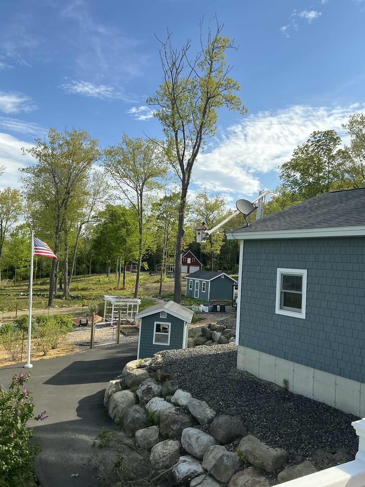
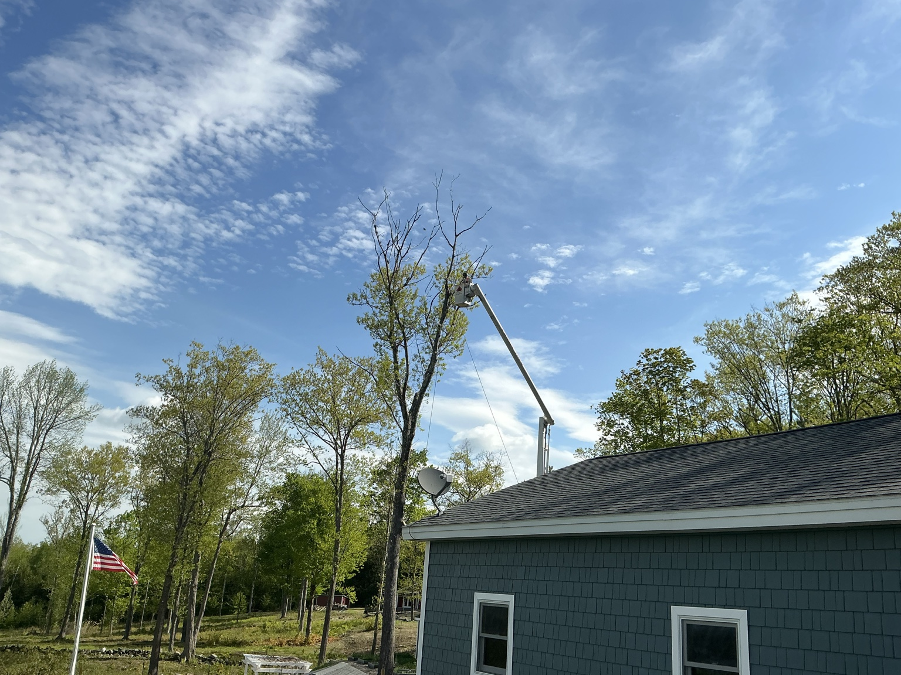
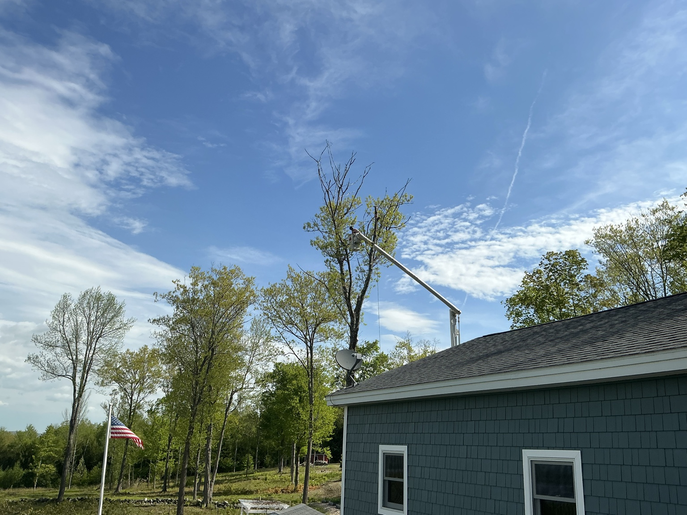
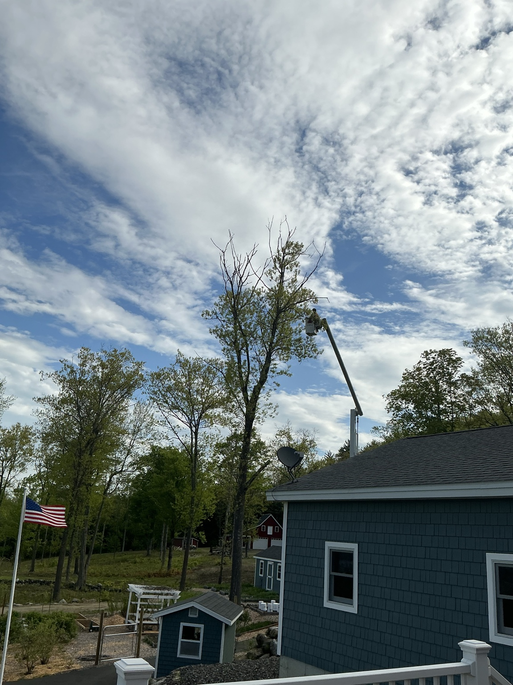
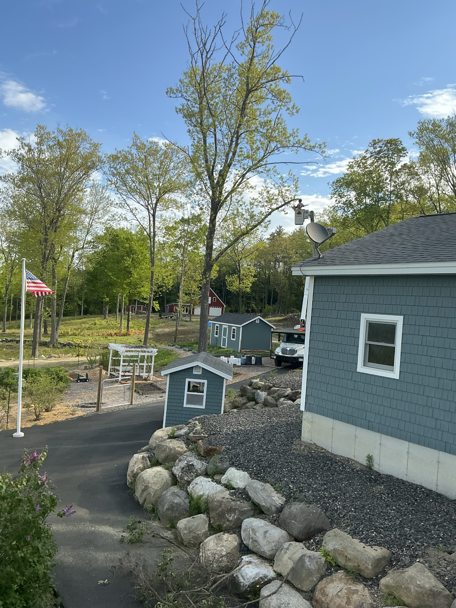

Preparing the tree for a new purpose
Poulin Tree removed the hazardous crown and branches while intentionally preserving a substantial standing trunk. That trunk later became the canvas for the eagle and woodland-wildlife carving.
Project status: Tree-removal documentation is complete. The carving project continues separately.
Removal sequence




